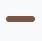
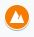

Bienvenue !
Vous pouvez soit consulter la carte à travers la fenêtre intégrée dans ce site (grands écrans seulement) ou cliquer sur le bouton gris en dessous de cette fenêtre. Un ensemble de couches et endroits devraient être visibles sur vôtre gauche. Vous pouvez sélectionner et désélectionner certaines cases afin de voir ou ne pas voir certaines couches contenant des endroits qui sont arrangés thématiquement. Pour voir les informations associées avec l’endroit vous pouvez soit cliquer sur le point marqué sur la carte ou, encore une fois, cliquer sur l’endroit affiché dans le menu. Le nom de l’endroit donne un identifiant et le nom de l’endroit.
Informations importantes :
Même si cette carte peut avoir certaines imprécisions, je vous promets que les informations que je fournis essaient de relayer les informations sorties de mes recherches de la façon la plus précise possible. Je n’ai pas visité chacun de ces endroits, mais ceci est mentionné dans la description de l’objet sur la carte. Si par mégarde vous constatez des imprécisions ou des erreurs je vous prie de m’excuser. Vous pouvez me contacter si besoin, que ce soit pour signaler une erreur ou me proposer des suggestions :)
Je vous prie également de vérifier les informations de la carte à chaque fois car les informations peuvent être mises à jour, voire de changer complètement.
Puisque ce site ne peut être accédé par tout le monde, le même régime s’applique à cette carte. J’apprécierais si tous ces endroits ne seraient pas partagés partout car ce n’est pas un guide touristique mais un outil utile pour mes amis et moi. Mais si vous êtres sur cette page web il y a de grandes chances que je ne me fais aucun souci avec comment vous utilisez cette carte ! Juste s’il vous plaît soyez respectueux de ces endroits (terme a interpréter au sens large).
Toutes les cartes et sources que j’utilise sont dans la partie ressources et sources de ce site.
Explication des couches, icônes et identifiants :
This section explains every layer, as well as provides tables of icons you might see which belong to this table.
Couche 1 : lieux divers. Cette couche contient la majorité des endroits que vous verrez sur la carte. Ce sont des endroits qui n’entrent pas nécessairement dans une catégorie précise englobée par les autres couches. Ce sont juste des endroits sympathiques ou intéressants.
| Icône | Identifiant | Description |
|---|---|---|
| A | Lieux divers, voir l’explication ci-dessus. |
Couche 2 : Monuments et lieux historiques. Cette couche contient tout ce qui est signifiant historiquement ou culturellement parlant (mais certains lieux moins importants peuvent se retrouver comme lieux divers). Les statues, un lieu de culte, une vieille construction, un château, des ruines, etc… Tous ces lieux sont représentés par des icônes particuliers qui ont ensuite un code couleur selon la période historique qui les représente le plus. Je comprends bien évidemment que la délimitation ne peut parfois pas être très clair. Mais bon c’est ma carte je fais ce que je veux.
| Icône | Identifiant | Description |
|---|---|---|
| H | Un lieu historique (icône général ; pas de couleur) | |
| H | Tout lieu historique trouvant ses racines dans une période avant ou pendant le néolithique. | |
| H | Tout lieu historique de l’antiquité qui n’est pas romain. | |
| H | Lieu romain. | |
| H | Lieu lié au Moyen-Âge. | |
| H | Lieu lié à la Renaissance. | |
| H | Lieu lié aux Temps Modernes et après (tout ce qui est après la Révolution Française). | |
| H | Une statue (contemporaine) | |
| H (F) | Un château, fortification, etc. qui n’est pas encore ruiné. La couleur peut changer selon la période de la même façon que décrit précédemment. | |
| H (R) | Un lieu de culte, église, temple, … La couleur varie encore une fois de la même manière qu’avant. | |
|  | H (P) | Un chemin, une route historique, etc… La couleur varie encore une fois de la même manière qu’avant. |
Couche 3 : Formations naturelles notables. Contient des formations géographiques, montagnes, rivières, grottes, etc. *Une note TRÈS IMPORTANTE : toutes les grottes et montagnes sur cette carte sont des lieux praticables par des gens comme moi et ceux qui visionnent cette carte (de jeunes adultes qui font occasionnellement de la randonnée). Ce n’est pas le Mont Blanc, ni la Pointe Dufour, ni le Finsteraarhorn. Ce n'est pas le Baume n°2 de la Clairière de Trébille non plus. Même si ces lieux sont extrêmement intéressants et fascinants, ils ne sont actuellement pas sur la carte car ils ne sont pas praticables par des gens qui ont nos capacités ! Enfin, je ne peux pas le souligner assez : soyez exceptionnellement attentionnés et prudents, prenez toutes les précautions nécessaires, ne le faites pas si vous avez un seul gramme d’incertitude. Prenez le bon équipement, anticipez bien les choses qui peuvent survenir, informez des gens proches de vous avant que vous partiez, etc. Offrir une certaine visibilité sur cette carte ne vous donne pas carte blanche ! Je suis bien-sûr pas responsable pour les diverses choses qui pourraient survenir dans ces endroits, je vous ai averti !
| Icône | Identifiant | Description |
|---|---|---|
| C | Une grotte (celles qui peuvent être explorées sans beaucoup de matériel OU qui sont juste intéressantes de voir à l’extérieur. Mon opinion et les avertissements sont disponibles dans la description de chacune de ces grottes. Je ne suis pas responsable pour un quelconque fait divers qui pourrait y survenir ; ne vous faites pas écraser des dizaines de mètres sous le sol en montagne). | |
| M | Un sommet entre 0m et 999m au-dessus du niveau de la mer (oui, certaines collines comptent du coup). | |
|  | M | Un sommet entre 1000m et 1999m au-dessus du niveau de la mer. |
 |
M | Un sommet entre 2000m et 2999m au-dessus du niveau de la mer. |
| M | Un sommet entre 3000m et 3999m au-dessus du niveau de la mer. | |
| M | Un sommet entre 4000m et 4999m au-dessus du niveau de la mer (et techniquement au-dessus). |
Couche 4 : lieux temporaires. Par exemple s’il y a une installation temporaire quelque part ou un évènement. Si j’organise une sortie il y a une chance qu’il y ait une route temporaire qui soit sur la carte.
| Icône | Identifiant | Description |
|---|---|---|
| T | Ligne ou chemin temporaire. | |
| T | Point temporaire. |